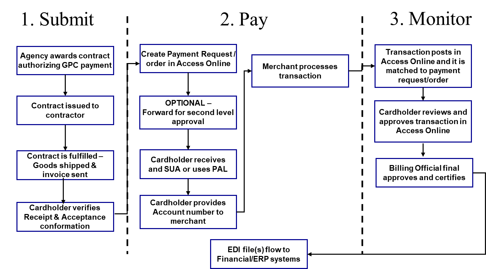

Chapter 2 - Program Organization, Roles, and Responsibilities
The general roles and responsibilities of the participants in the purchase card program are presented in the following regulations:
a. DoD Charge Card Guidebook
b. AFARS Appendix EE and AFARS 5113.201
c. Chapter 4500 of the Treasury Financial Manual
d. Office of Management and Budget (OMB) Circular 123, Appendix B Revised, Chapters 4
e. DoD FMR Vol. 5, Ch. 33 and Vol. 10, Ch. 23
2-1. Responsibilities and Governmental Functions
All Program personnel will complete GPC-specific training prior to being appointed any responsibilities within the GPC Program. In addition, all GPC personnel will keep their GPC training current to continue to hold GPC positions. All Program personnel must protect the information derived from use of the GPC. All appointments must be made in JAM, an application within PIEE used by GPC participants to initiate, review, approve, maintain, and terminate GPC appointment and delegation letters. Paper copies of appointments are not required if appointments are issued using JAM. Government contractor employees will not be appointed as A/OPCs, BOs, or CHs, nor perform independent receipt of goods and services and will not be granted access to the card-issuing bank’s electronic access system (EAS) or any of the business IT systems. However, contractors may be granted read-only access to the card-issuing bank’s EAS upon Level 3 A/OPC approval.
2-2. Program Hierarchy Structure and Roles and Responsibilities
The GPC Program is founded on a six-tiered hierarchal reporting chain of command system identified in Figures 2-1 and 2-2. The formal names associated with specific roles within this hierarchy are often used interchangeably with the corresponding level of authority within the hierarchy. For instance, A/OPCs may be referred to as Level 4s, and the Army GPC CPM is often referred to as the Level 2. Table 2-1 describes the GPC roles in PIEE and JAM.
Figure 2-1: Hierarchy Chart
Office Secretary of Defense
DPC
(Level 1)
Department of the Army (DA)
CPM
(Level 2)

Command A/OPC
OA/OPC
(Level 3)

Direct A/OPC
A/OPC
(Level 4)

CH’s Supervisor
(Preferred)
Billing Official (BO)
(Level 5)

Requiring Activity
Cardholder (CH)
Level 6

Figure 2-2: Hierarchy Structure
| Army Level/Hierarchy GPC Program Structure | ||
|---|---|---|
| Level 1 A/OPC | DoD | DPC manages the DoD GPC Program |
| Level 2 A/OPC (CPM) |
ASA(ALT) DASA(P) |
The DASA(P) appoints the CPM (Level 2 A/OPC) to administer the Army GPC Program. |
| Level 3 OA/OPC |
Army Command (ACOM) or equivalent |
ACOM or equivalent organization must possess HCA authority. SCO appoints the Level 3 A/OPC. SCO may delegate this appointment further. The SCO’s management responsibility for the GPC program may be delegated to the CCO. Level 3 A/OPC reports to the Level 2 A/OPC as required. |
| Level 4 A/OPC | Installation or equivalent | SCO or equivalent appoints the Level 4 A/OPC. SCO may delegate this authority to the CCO or equivalent. Level 4 A/OPC reports to the Level 3 A/OPC as required. |
| Level 5 |
Billing Official and Alternate |
CCO appoints the BO. This authority may be delegated to the Level 4 A/OPC. BO is also a certifying officer. BO monitors and approves CH purchases and certifies billing statements. |
| Level 6 | Cardholder |
CH is the individual issued the GPC or convenience checks. Level 4 A/OPC appoints the CH (when CCO delegates the authority to A/OPC). CH must acknowledge authority and duties by signing appointment letter in JAM. |
Table 2-1: JAM GPC Roles
| # |
GPC JAM and PIEE Roles |
Who Submits Request |
Additional Guidance Information |
JAM Appointment Issued |
How Is the Process Initiated? PIEE Registration (Note 1) / Self-Initiate or Nominate (Note 2) |
Warrant Issued | |
|---|---|---|---|---|---|---|---|
| 1 |
GPC DoD Program Management Office (PMO) |
DPC (Contracting eBusiness) The PIEE Hierarchy Level 1. |
None | None |
PMO representative registers for PIEE access and requests role. |
No | |
| 2 | Component Program Manager (CPM) | The PIEE Hierarchy Level 2. | None | CPM appointment letter |
CPM registers for PIEE access and requests role. |
No | |
| 3 |
GPC Delegating/ Appointing Authority (DAA) |
Individual(s) (other than the A/OPC or OA/OPC with delegating authority) who have retained or been delegated authority to electronically sign GPC Delegation of Procurement Authority and GPC Appointment Letters (e.g., the Director of Contracts or SCO). | Servicing Agency A/OPCs should direct any individual at a “Requesting Agency” who has been delegated authority to sign delegation and appointment letters to request this role during PIEE registration. These individuals must have been issued an SF 1402 authorizing them to further delegate procurement authority. | None |
DAA may register for PIEE access and request role or complete actions using only tokenized emails. |
No | |
| 4 |
OA/OPC With Delegating Authority (Note 3) |
Primary and Alternate A/OPCs with responsibility for managing / overseeing other A/OPCs. | None | OA/OPC Appointment Letter |
OA/OPC registers for PIEE access and requests role. |
Yes | |
| 5 |
OA/OPC Without Delegating Authority |
Primary and Alternate A/OPCs with responsibility for managing / overseeing other A/OPCs. | None | OA/OPC Appointment Letter |
OA/OPC registers for PIEE access and requests role. |
No | |
| 6 |
A/OPC With Delegating Authority (Note 3) |
Primary and alternate A/OPCs responsible for day-to-day management and oversight of CH and managing accounts (Note 4). | None | A/OPC Appointment Letter |
A/OPC registers for PIEE access and requests role. |
Yes | |
| 7 |
A/OPC Without Delegating Authority |
Primary and alternate A/OPCs responsible for day-to-day management and oversight of CH and managing accounts (Note 4). | None | A/OPC Appointment Letter |
A/OPC registers for PIEE access and requests role. |
No | |
| 8 | Approving/Billing Official (A/BO) | Program officials responsible for reviewing and approving GPC managing account (MA) billing statements (GPC bank invoices) and transaction supporting data for compliance with applicable acquisition policies. | None | A/BO Appointment Letter |
OA/OPC or A/OPC nominates A/BO using JAM. A/BO responds to JAM-generated email direction to register for PIEE access. When A/BO uses the identical email entered during nomination, the role request and required DoDAACs are pre-populated. |
No | |
| 9 | Certifying Officer | Program officials responsible for reviewing GPC MA billing statements in accordance with DoD FMR requirements and certifying statements (GPC bank invoices) for payment. |
Certifying Officer responsibilities are addressed in DoD FMR Volume 10, Chapter 23 (230406) and DAU CLG 006. Certifying Officer appointments are made in accordance with DoD FMR Vol. 5, Chapter 5. |
DD Form 577 Certifying Officer Appointment |
OA/OPC, A/OPC or DD 577 Appointing Authority (AA) nominates Certifying Officer using JAM. Certifying Officer responds to JAM-generated email direction to register for PIEE access. When Certifying Officer uses the identical email entered during nomination, the role request and required DoDAACs are pre-populated. |
No | |
| 10 | Cardholder (CH) | Individuals who have been issued GPC CH accounts. |
Includes carded, cardless, and convenience check accounts. 10 types of “Special Use” CH delegations are available. 2 of the 10 CH delegations are equivalent to issuance of a SF 1402 Certificate of Appointment. |
GPC CH Appointment Letter |
OA/OPC or A/OPC nominates CH using JAM. CH responds to JAM-generated email direction to register for PIEE access. When CH uses the identical email entered during nomination, the role request and required DoDAACs are pre-populated. |
||
| 11 | Component Resource Manager (CRM) | The Comptroller/FM for the Component. | None | None | CRM registers for PIEE access and re-quests role. (Note 5) | No | |
| 12 | Oversight RM | Individuals responsible for approving RM access to PIEE; they can also perform all RM functions. | None | None | Oversight RM registers for PIEE access and requests role. | No | |
| 13 | Resource Manager (RM) |
Provides appropriate GPC account funding, enters associated lines of accounting (LOAs) into applicable systems, and works with the A/OPC to establish spending limits tied directly to funding allocated for each managing and CH account. |
None | None |
RM registers for PIEE access and requests role. |
No | |
| 14 | Supervisor | Supervisors of individuals with PIEE roles. |
Supervisor information is available to JAM from the data the individual enters during their PIEE registration. Future PIEE releases are planned to connect to DEERS for supervisory information. |
None |
Not Required (Note 6) PIEE users identify their supervisor in their PIEE account profile. |
No | |
| 15 | DD577 View Only |
Individuals in paying offices (e.g., DFAS) who need to view DD Form 577 appointments. Other individuals who require access to view DD Form 577s. May be granted to contractor personnel. |
None | None | Registers for PIEE access and requests “DD 577 View Only User” role. | No | |
| 16 | DD577 Appointing Authority | Individuals authorized by Component-level Financial Management procedures to sign DD Form 577 Certifying Officer appointments in accordance with FMR Vol 5, Ch 5. | None | None | Registers for PIEE access and requests “DD 577 Appointing Authority” role. | No | |
| 17 | GPC Help Administrator (HAM) | Individuals providing help desk support to GPC program officials. |
May be granted to contractor personnel. (Note 7) |
None | Registers for PIEE access and requests “GPC Help Administrator” role. | No | |
| 18 | GPC Auditor | Individuals granted access to PIEE GPC functionality for purposes of reviewing the GPC program | GPC Auditor is required to load a scanned copy of audit letter during PIEE registration process. Each request must specify the purpose, scope of the review, define the access required, and state the desired access period (start and end dates). Access requests must be approved by the CPM. | None | Self-Initiate. | No | |
|
|
|||||||
2-3. Component Program Manager (Level 2 A/OPC) Duties and Responsibilities
a. Administer the Army GPC Program.
b. Establish policies and guidelines.
c. Design and maintain hierarchies and approve subordinate Level 3 A/OPCs.
d. Interface with the DPC GPC program office on performance issues.
e. Ensure effective Army GPC surveillance (e.g., Procurement Management Reviews (PMRs)).
f. Liaison with Army organizations, the servicing bank, DPC, GSA, and other federal agencies.
g. Manage and implement technical and system enhancements.
h. Develop, test and deploy GPC hardware/software/networking systems enhancements.
i. Review and submit monthly, semi-annual, and annual reports as required.
j. Implement trends, best practices, increase rebates, and lower costs to improve the program.
k. Participate in meetings, events, training events, and panel discussions representing the Army.
l. Communicate DoD and Army GPC policy/procedure updates and surveillance/audit findings.
m. Address systemic program deficiencies and discrepancies.
2-4. Primary and Alternate Level 3 A/OPC Duties and Responsibilities
a. Implement, administer, and monitor the ACOM GPC program subject to DoD and Army policies.
b. Serve as a liaison with all GPC Program stakeholders (e.g., HQDA, DPC, GSA, AAA, Bank, etc.)
c. Review and submit monthly and semi-annual IOD reports.
d. Inform Level 2 A/OPC of GPC program trends and issues as they arise.
e. Provide program support to ACOM and installation Level 4 A/OPCs.
f. Establish and implement ACOM-specific policy and guidelines.
g. Develop/implement program internal control requirements and surveillance plan.
h. Participate in GPC program meetings and events.
i. Suspend accounts and administer corrective actions for non-compliance.
j. Ensure all Level 4 A/OPCs meet education, training, and certification requirements.
k. Track training for Level 4 A/OPCs in PIEE/JAM.
l. Ensure all Level 4 A/OPCs hold appointment letters in PIEE/JAM.
m. Lead implementation of GPC systems at the Command level.
n. Coordinate GPC program changes with CPM (e.g., hierarchy changes, Level 3 appointments).
o. Respond to data calls in a timely manner and with concise, current data.
p. Oversee Level 4 A/OPC program controls, including managing account reviews and IOD reviews.
q. Manage agent numbers and periodically assess the ongoing need for agent numbers.
r. Manage enterprise data mining processes per DPC policy and procedures.
s. Maintain managing accounts to meet mission needs.
t. Communicate policy updates, procedure changes, and other information to Level 4 A/OPCs.
u. Process and retain waivers, exceptions and deviations.
v. Review and submit weekly, monthly, quarterly and annual reports as required.
w. Seek out trends and best practices to improve the Program.
x. Implement innovative means to increase rebates, lower administrative costs and merchant prices.
y. Proactively address and resolve emails at the lowest level.
z. Resolve deficiencies and discrepancies impacting program effectiveness and efficiencies.
aa. Perform PMRs every three years.
2-5. Primary and Alternate Level 4 A/OPC Duties and Responsibilities
a. Manage the day-to-day operation of the GPC program at an installation/organization.
b. Assist CHs and BOs in fulfilling their responsibilities.
c. Serve as the liaison between the Level 3 A/OPC and the installation/organization GPC personnel.
d. Liaison between the financial/contracting communities as it applies to the GPC payment process.
e. Serve as the installation/organization point of contact for bank-related matters.
f. Provide business advice to supporting organizations, CHs, BOs, and small business specialists.
g. Participate in meetings. Communicate Army policy updates and internal review findings.
h. Assist the Level 3 to increase rebates and lower administrative and merchant costs.
i. Ensure the proper disposition of rebate checks.
j. Ensure GPC Program personnel are properly trained and appointed.
k. Maintain currency in training in order to perform their respective duties.
l. Establish and maintain a manual or electronic file for each BO and CH per retention rules.
m. Establish, maintain, and terminate CH and BO accounts within the servicing bank’s EAS.
n. Ensure that all managing accounts have a primary and alternate BO.
o. Evaluate the effectiveness of each BO’s ability to review, approve and reconcile transactions.
p. Ensure timely reconciliation of all CH and BO accounts at the end of the billing cycle.
q. Coordinate with RMs to ensure timely certification and payment.
r. Confirm completion of required initial and refresher training for all CHs and BOs.
s. Maintain training records within PIEE and JAM.
t. Coordinate with the Accountable Property Officer (APO).
u. Provide training to CHs on property accountability procedures.
v. Nominate and appoint CHs and BOs within PIEE and JAM.
w. Maintain and terminate appointment letters in JAM.
x. Maintain program oversight through IOD, annual management assessment, and bank reports.
y. Complete all assigned IOD cases, monthly reviews, and semi-annual reviews per policy timelines.
z. Address program deficiencies and discrepancies identified in IOD.
aa. Annually assess each CH’s continuing need to maintain an account.
bb. Close unused accounts as appropriate.
cc. Request justification in writing from BOs when accounts with little activity must remain open.
dd. Perform Level 4 Annual Assessment using the Annual Assessment Checklist.
ee. Develop and implement local GPC procedures.
ff. Inform CHs of prohibited items and services.
gg. Monitor bank transaction reports to identify potential improper use of the GPC.
hh. Take corrective action to address any suspected legal or policy violations.
ii. In the event of unauthorized card activity or fraud, set the single purchase limit to $1.
jj. Monitor bank transaction declination reports to identify potential fraud activity.
kk. Review transactions of newly appointed CHs within four months of appointment.
ll. Reduce managing accounts as appropriate to meet mission needs.
mm. Process requests for user identifications in the servicing bank’s EAS.
nn. Screen any accounts which have not been used within six months and take appropriate action.
oo. Utilize the Semi-Annual Report to brief management.
pp. Process and retain waivers, exceptions, and deviations.
qq. Ensure lost/stolen cards are immediately reported.
rr. Temporarily suspend any account over 30 calendar days past due.
ss. Suspend entire Level 4 organization accounts for any account over 120 days past due.
tt. Review and submit reports as required.
uu. Analyze trends to improve the Program.
vv. Assist BOs and CHs with reports as necessary.
ww. Activate, deactivate/terminate, and maintain (adjust limits, etc.) CH and BO accounts.
xx. Identify, monitor, and resolve any terminated accounts with outstanding credits.
yy. Ensure appropriate separation of duties and span of control ratios are maintained.
zz. Proactively address automated email notifications (e.g., IOD cases or delinquencies).
aaa. Address deficiencies and discrepancies impacting program effectiveness or efficiencies.
2-6. Primary and Alternate Level 5 - Billing Official Duties and Responsibilities
a. Review and reconcile CH statements against receipts and documentation.
b. If a CH is absent, approve CH’s statement within the required timeframe.
c. Certify billing statements electronically within 5 business days of the end of the billing cycle.
d. Forward official invoice to DFAS for manually paid accounts within 15 days of receipt.
e. Verify payments to be legal, proper, necessary, and correct per Government rules and regulations.
f. Complete all assigned IOD data mining cases in a timely manner.
g. Ensure CHs upload all transaction documentation in the servicing bank’s EAS.
h. Report questionable transactions to the Level 4 A/OPC and/or appropriate authorities for review.
i. Resolve any questionable purchases with the CH and A/OPC.
j. Recommend in writing GPC credit limits to the RM and Level 4 A/OPC, for CHs under BO account.
k. Coordinate with the bank to resolve payment issues.
l. Identify and communicate billing discrepancies to the bank’s transaction dispute point of contact.
m. Send a report to the A/OPC detailing the circumstances of any lost, stolen or compromised cards.
n. Ensure designation of the proper line of accounting.
o. Ensure an Alternate BO is appointed.
p. Notify the Level 4 A/OPC promptly to close any CH accounts no longer needed.
q. Notify the Level 4 A/OPC to terminate or reassign the BO account prior to departure/reassignment.
r. Serve as the point of contact for GPC compliance inspections/audits/reviews.
s. Support A/OPC surveillance reviews.
t. Complete any corrective actions identified after each audit or A/OPC review.
u. Establish/recommend CH and BO credit limits to the A/OPC based on historical use.
v. Ensure spending limits are held to the minimum amount necessary to meet mission requirements.
w. Ensure spending limits are not exceeded.
x. Verify appropriate and sufficient funds are available prior to CH purchases.
y. Ensure all transactions are for valid, official Government requirements.
z. Provide written approval or disapproval of purchase requests to the CH.
aa. Ensure sources are rotated when possible.
bb. Ensure CHs are not splitting requirements to avoid exceeding the MPT.
cc. During the reconciliation process, review and ensure supporting documentation is loaded in the bank’s EAS prior to certifying the monthly invoice.
dd. Register for electronic data notifications within the bank’s EAS for automated email alerts.
ee. Ensure convenience check data is maintained.
ff. Ensure Internal Revenue Service (IRS) Form 1099 has been completed and reported for convenience checks.
gg. Ensure sales taxes are not paid (as appropriate).
hh. Immediately notify A/OPC upon discovery of suspected unauthorized purchases.
ii. Notify the A/OPC when CH or BO personnel changes occur.
jj. Immediately notify of lost or stolen cards.
2-7. Level 6 - Cardholder Duties and Responsibilities
a. CH authority is limited to the threshold indicated on their delegation of authority in JAM.
b. Use GPC to make authorized purchases within the limits of their delegation of authority in JAM.
c. Screen all purchase requests upon receipt.
d. Verify that the requested items meet a legitimate government need.
e. Notify the BO of unusual or questionable purchase requests.
f. Check requirements for their availability from the mandatory Government sources.
g. Make purchases in accordance with FAR Part 8 required sources of supplies and services.
h. Rotate merchants when practicable.
i. Allocate transactions to the proper line of accounting.
j. Obtain BO approval prior to purchase. Obtain all required pre-purchase approvals.
k. Track receipt/acceptance of purchased goods or services.
l. Track partial shipments to ensure they are received within the dispute window.
m. Track any transactions for items not yet received.
n. Collect, maintain and upload the required purchase documentation in the servicing bank’s EAS.
o. Match orders and review and reconcile monthly statement.
p. Register to receive the bank’s Electronic Data Notifications (automated email alerts).
q. Resolve unauthorized, erroneous, or questionable transactions with merchants.
r. Dispute questionable transactions.
s. Dispute transactions within 90 calendar days from the date the transaction posts to the account.
t. Dispute unresolved billing errors (e.g., supplies not received by the next billing statement).
u. Dispute transactions when receipt and acceptance of goods or services cannot be verified.
v. Dispute items the merchant fails to replace, modify, or repair by the allotted time.
w. Resolve any invalid transactions with the merchant.
x. Track all disputes to completion.
y. Confirm with the merchant the items ordered are in transit and track the transactions to completion.
z. Maintain physical security of the GPC and convenience checks to avoid unauthorized use.
aa. Allow no one but the designated CH to use the card.
bb. Do not release the account number to entities other than a merchant processing a transaction.
cc. Notify the BO of a lost, stolen, or compromised GPC within one business day.
dd. Maintain the bank’s EAS purchase log, which is located under Transaction Management.
ee. Reconcile all transactions and upload all supporting documentation in the bank’s EAS.
ff. Approve the account statement within 3 business days of the cycle end date.
gg. Maintain a manual purchase log if the electronic purchase log in the bank’s EAS is not accessible.
hh. Ensure the Accountable Property Officer (APO) has screened the purchase request.
ii. Upload all receipts for the APO to review electronically in the servicing bank’s EAS.
jj. After items arrive, provide receipts to the supporting APO within five business days.
kk. Notify the BO when you are not available to approve the CH statement.
ll. Provide all records and purchase file documentation to the BO upon departure or reassignment.
mm. Maintain a separation of duties of making purchases and receiving the goods/services.
nn. Forward requirements exceeding the MPT to the contracting office for purchase.
oo. Verify and document receipt/acceptance of goods or services.
pp. Checkwriters - Ensure convenience check data is maintained.
qq. Checkwriters - Ensure IRS Form 1099 has been completed, reported, and retained.
2-8. GPC Support Function Duties
a. Resource Manager GPC Support Function Duties.
1) Fund GPC purchases and provide a system of positive funds control.
2) Assist the Level 4 A/OPC in establishing and maintaining BO and CH accounts.
3) Assign default and alternate lines of accounting as appropriate.
4) Ensure obligations are posted prior to invoicing for non-Electronic Data Interchange (EDI) accounts.
5) Assist with resolving accounts that are in a delinquent status and provide payment information when requested.
6) Assist the Level 4 A/OPC with the surveillance of assigned accounts.
7) Monitor General Fund Enterprise Business System (GFEBS) and Defense Enterprise Accounting Management System (DEAMS) daily to identify account payment issues, prevent and resolve GPC payment delinquencies, correct Intermediate Document (IDOC) errors, and provide payment information upon request.
8) Provide guidance and training to installation RMs, BOs, and CHs on GFEBS/DEAMS processes.
9) Provide appropriate funding for the accounts and enter associated lines of accounting into applicable systems.
10) Establish spending limits that are tied directly to funding allocated for each billing and CH account.
b. Organizational PIEE Government Administrator Manager (GAM) GPC Function Duties.
1) Administer Location Codes.
2) Look up group names and GAM information.
3) View and edit user profile information.
4) Activate (add) and deactivate users.
5) Reset user passwords.
6) Reset certificates.
c. Defense Finance and Accounting Service (DFAS) Support Function Duties.
1) Provide tax reporting guidance to checkwriters. See Chapter 10-3.
2) Confirm the DD Form 577 for certifying officials.
3) Receive and process EDI transaction sets 821, Obligation Files; and 810, invoice files, and notify the responsible installation or activity when the corresponding files are not received.
4) Notify the installation/activity, within one day, of rejects and interest penalties assessed to individual accounts.
5) Receive and process requests for manual payments, e.g., bank system rejects and non-EDI accounts.
6) Assist in resolving GPC payment issues.
d. Senior Contracting Official (SCO), or equivalent Duties.
1) The SCO or equivalent is responsible for the operation and execution of their GPC Program in compliance with this document and the policies and procedures issued from the ODASA(P). The SCO is ultimately responsible for establishing and complying with mandated internal controls which ensure the appropriate management, operation, and oversight of the local GPC program.
2) Develop internal management controls to operate, manage, provide oversight, and maintain the integrity of the local GPC Program.
3) Ensure adequate checks and balances are in place to manage local GPC programs.
4) Ensure CHs are not subjected to undue influence in performing their duties and responsibilities.
5) Ensure separation of duties. Ensure the roles and responsibilities of the individuals within the GPC program are not in conflict. Individuals designated as A/OPCs will not be simultaneously designated as BOs or CHs. Individuals designated as BOs will not be a CH on the same managing account.
6) Manage span of control appropriately. Primary and alternate A/OPCs will not be responsible for more than 250 GPC accounts. Additional A/OPCs must be appointed whenever the combined number of CH and managing accounts exceed the 250:1 ratio. The number of CH accounts assigned to a primary BO will not be more than seven (7:1). Additional BOs must be assigned by the organization whenever the number of CH accounts exceed the 7:1 ratio.
7) Ensure that A/OPCs have the necessary resources to accomplish program oversight.
8) Delegate appointing authority when needed. The HCA may retain the authority to appoint A/OPCs or delegate this authority to the SCO or equivalent. The SCO may further delegate this authority in writing as necessary and ensure all appointments are executed properly through JAM.
e. Accountable Property Officer (APO) GPC Support Function Duties.
1) Assist the A/OPC in reviewing card accounts to ensure that property accountability procedures are being followed.
2) Ensure established property control and accountability procedures are developed and disseminated to all personnel who are entrusted with the acquisition of Army property and equipment.
3) Comply with accountability procedures in Army Regulation (AR) 710-2 and AR 735-5.
4) Record in agency property systems any sensitive and pilferable property purchased with the GPC.
5) Determine the accounting requirements for the GPC purchased property, such as nonexpendable or controlled (requires property to be accounted for on property book records), durable (requires control when issued to the user) and expendable (no requirement to account for on property book records).
6) Pre-approve all Army purchase request forms (or similar local forms) for applicable items.
7) Require CH to provide copy of receipt/invoice along with proof of independent receipt/acceptance within 5 days of receipt of accountable item.
8) Determine if an exception applies for the purchase of training, services, or consumable supplies (e.g., office supplies, batteries).
f. Audit Agencies.
1) Auditors are authorized data access to retrieve GPC data within the GPC EAS systems. Specific roles are established in all GPC EAS systems when granted access for a limited amount of time.
2) GPC Auditor should load a scanned copy of the audit letter during the PIEE registration process. Each request must specify the purpose, scope of the review, define the access required, and state the desired access period (start and end dates). Access requests must be approved by the CPM.
3) Assist Army leaders in assessing and mitigating GPC risk by providing solutions through independent internal auditing services.
4) Ensure the ODASA(P) has an opportunity to participate in a proactive audit planning process, which is responsive to GPC management and acquisition needs.
2-9. Management of the GPC Program
a. The OUSD DPC Level 1 A/OPC interprets and tailors federal statutory and regulatory laws and guidance for DoD usage, develops business rules common to all DoD corporate card programs (purchase, travel, air, fleet, and fuel), and codifies them in the DoD Charge Card Guidebook.
b. The ODASA(P) has overall responsibility for the management of the Army GPC program. The ODASA(P) appoints a CPM, also known as the Level 2 A/OPC, to manage the Army GPC program. The SCO, or in activities that do not have a SCO, the CCO or equivalent, designates, at a minimum, one Level 3 OA/OPC and an alternate Level 3 OA/OPC who, once appointed in JAM, is dedicated to the management of the GPC Program within their agency/organization. The SCO or CCO may further delegate in writing the authority to appoint the Level 3 and 4 A/OPCs in accordance with Army policy. Level 3 A/OPCs with authority to delegate procurement authority must have the corresponding appointment letter in JAM to appoint Level 4 A/OPCs. Level 4 A/OPCs may appoint CHs and billing officials in JAM if they are given the authority to delegate procurement authority and have the corresponding appointment letter in JAM. Certifying officers must be appointed by the organization’s designated DD 577 appointing authority in JAM.
c. The Level 3 OA/OPC duties and responsibilities at Army major command headquarters typically warrant a grade (or equivalent thereof) of GS-14, preferably in the contracting career field, but exceptions may apply if approved by the SCO or CCO. The Level 3 A/OPC duties and responsibilities for non-headquarter commands typically warrant a grade of GS-12 to GS-14, preferably in the contracting career field, but exceptions may apply if approved by the SCO or CCO.
d. The Level 4 A/OPC duties and responsibilities typically warrant a grade (or equivalent thereof) of GS-11 to GS-12 in any career field (e.g., 1101, 1105, or 343) as long as they meet the knowledge, skills, and abilities listed below. The A/OPC will be designated by the appropriate contracting official to be responsible for the management, administration, and day-to-day operation of the GPC program at the activity. Written delegations are required in JAM, and each A/OPC will be granted the appropriate system access (e.g., JAM, bank EAS) associated with their role. Level 3 and 4 A/OPCs must complete the training requirements detailed in Chapter 4. Only individuals who possess the following knowledge, skills, and abilities may be appointed as Level 3 and 4 A/OPCs for the GPC Program:
1) Understanding of the relevant GPC policies, procedures, and commercial contracting practices.
2) Understanding of the relevant procurement laws and regulations.
3) Understanding of what constitutes an authorized purchase transaction.
4) Understanding of procurement methods and standards.
5) Ability to communicate, organize, and manage tasks effectively.
6) Basic analytical and computer skills.
7) Ability to summarize data, prepare reports and write effectively using proper grammar, punctuation, and tone.
8) Ability to analyze, research, and provide concise recommendations to the chain of command on required actions to anticipate, prevent, or correct problems in business processes that are supported by the GPC.
e. The Government Charge Card Abuse and Prevention Act of 2012 requires all Executive Branch agencies to establish and maintain safeguards and internal controls to prevent waste, fraud, and abuse of purchase cards. Internal controls are tools to help program and financial managers achieve results and safeguard the integrity of their programs. Effective internal controls provide reasonable assurance that significant risks or weaknesses adversely impacting the agency's ability to meet its objectives are prevented, minimized, or are detected in a timely manner. The Level 3 and Level 4 A/OPC will notify the BO or CH of any action taken due to a BO’s or CH’s non-compliance with Army policies and procedures.
f. Level 3 and Level 4 A/OPCs have the authority to apply internal controls such as suspending or cancelling BO or CH accounts; lowering credit limits; adding or deleting Merchant Category Codes (MCC); and initiating additional controls as necessary to comply with GPC policies and procedures.
g. Results of legal reviews are not sufficient justification for CHs to proceed with a particular purchase. If a CH or BO is unsure if they can proceed with a questionable purchase, they should contact the Level 4 A/OPC for guidance and confirm authority prior to making the purchase.
h. Army agencies and organizations must provide adequate resources dedicated to the GPC program within their agency/organization to ensure successful management of the program. Adequate GPC resources refer to an agency’s efficient and effective deployment of assets (e.g., span of control, personnel, training, funding, facilities, and deployment of knowledge and skills) as needed to comply with the policies, procedures, laws, and regulations governing the GPC Program. Adequate resources must be deployed to reasonably ensure that programs achieve their intended results; resources are used consistently with agency mission; programs and resources are protected from fraud, waste, and mismanagement; laws and regulations are followed; and reliable and timely information is obtained, maintained, and reported for decision-making.
i. The local contracting offices must coordinate with the local personnel office to ensure procedures are established requiring all individuals to coordinate with the Level 4 A/OPC when they out-process from the installation.
2-10. Separation of Duties
a. OMB standards for internal controls require that key duties and responsibilities be divided or segregated among individuals to ensure they do not exceed or abuse their assigned authority. See OMB Circular A-123, Appendix B Revised, paragraph 4.3. Separation of duties is an internal control activity intended to provide checks and balances to the GPC process and to prevent or minimize innocent errors or intentional fraud occurring without detection. This internal control ensures that no single individual has control over multiple phases of a purchase card transaction. To protect the integrity of the procurement process, no one person is responsible for an entire purchase card transaction. Key purchase card functions must be handled by different individuals. Inadequate separation of duties could allow errors and fraud to occur without detection. Key duties, such as making purchases (CH), authorizing payments (BO), certifying funding (RM), and reviewing transactions (Level 4 A/OPCs and APOs) must be assigned to different individuals to minimize the risk of loss to the Government to the greatest extent possible.
b. If resource constraints prevent assignment of the key duties to different individuals, as set forth in paragraph a. above, the activity must request a waiver through the Level 4 A/OPC and the CCO to the Level 3 A/OPC for approval.
c. Notwithstanding the above-described waiver process, certain key duties must not be assigned to the same individual. In no case will the same individual be the CH and the BO for a GPC account. In no case will the Accountable Property Officer or any A/OPC (primary or alternate) also be a CH, BO or contracting officer who is making contract payments with a GPC or executing GPC purchases. A CH who is a hand receipt holder should not purchase property for their own use. The servicing bank provides the functionality to generate a report identifying potential conflicts of interest in GPC program duties.
2-11. Span of Control
a. Span of control refers to the extent of oversight and review responsibilities placed on a single A/OPC, BO, or CH. An appropriate span of control must efficiently and effectively allow the A/OPC, BO, or CH to provide reasonable assurance they can effectively perform their responsibilities regardless of the number of accounts assigned. The assigned span of control must factor in the monitoring and oversight responsibilities to include the use of MasterCard’s Insights on Demand (IOD) data mining and review process.
b. The Army standard for span of control for a Level 4 A/OPC will not be more than 250 total accounts to one Level 4 A/OPC. This number includes both BO and CH accounts. Span of control updates are deemed necessary due to changing program dynamics and increased oversight burdens placed on GPC oversight personnel over time. As the micro-purchase threshold has increased multiple times over the years, additional oversight has been required as the average dollar value and the types and complexity of the GPC supplies and services being purchased has increased. A/OPCs and other GPC oversight officials have also been required to fulfill additional duties related to statutory and regulatory DoD Charge Card Guidebook, FAR, and DFARS requirements, including complying with Fiscal Year (FY) 2019 NDAA Section 889(a)(1) requirements. These dynamics warranted a reduction in the number of GPC accounts an A/OPC is authorized to oversee, and the flexibility for Component Program Managers to deviate from updated span of control ratios when sufficient compensating controls are in place.
c. A ratio of not more than seven card accounts to a primary BO is the Army standard. Ensuring a reasonable number of card accounts are assigned to each primary BO is paramount to the effective accomplishment of the BO’s responsibilities. The total number of transactions, as well as the number of assigned card accounts, must be considered when determining an acceptable card account to BO ratio.
d. When the number of accounts (250:1 account per A/OPC) or workload complexity/administration assigned to a Level 4 A/OPC exceeds the Army standard, the SCO and the CCO must ensure adequate resources are made available to allow the A/OPCs to successfully perform their duties. When the span of control exceeds the Army standard and the CCO elects not to provide additional resources, the CCO must submit a waiver request in writing to the CPM for approval. The waiver request must include the rationale and justification upon which the CCO has based the determination that the existing span of control is adequate to ensure program administration and that surveillance can be performed at a satisfactory level given the existing or new compensatory controls put in place. The Level 3 A/OPC must retain a copy of this documentation.
e. The Level 4 A/OPC determines whether the BO to CH ratio is acceptable upon issuance of a GPC, during the A/OPC’s annual assessment of their GPC program, or as needed. There must be a reasonable expectation that the BO can complete a thorough review of all transactions and certify the invoice within five business days of its receipt. When the ratio for CH accounts to BO exceeds the Army standard, the BO should lower the number of card accounts or request a waiver to policy. The Level 4 A/OPC will document all cases where the CH to BO ratio exceeds the Army standard. The waiver to policy request must address the unique conditions that affect the process and show, with a high degree of certainty, that the BO can be expected to comply with the review and certification procedures. The request must include the number and location of assigned CHs, the total average number of transactions made by the CHs, the amount of time the BO can devote to the certification process, the history of delinquencies, and other appropriate factors. The waiver is approved at the following levels indicated below and maintained by the approver with copies furnished to the BO:
1) 8–10 card accounts. Routed through the Level 4 A/OPC to the CCO.
2) 11–19 card accounts. Routed through the A/OPCs (Level 4 and Level 3) to the SCO.
3) 20 or more card accounts. Routed through the A/OPCs (Level 4 and Level 3) to the Level 2.